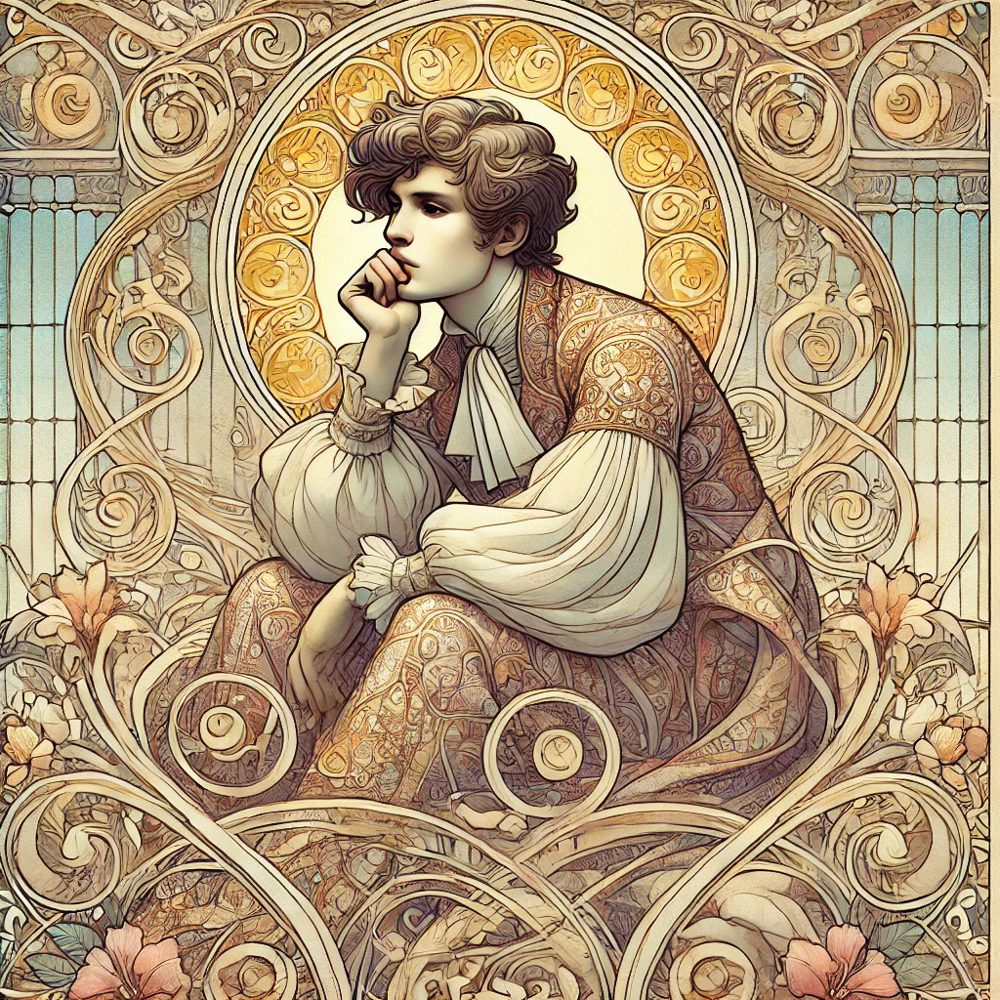

도슨트 정우철의 미술 극장
목차
작가
정우철
출판일
2021년
감상평에 대한 AI그림
평소 명화는 자주 봤지만 정작 그 그림을 그린 화가에 대해서는 잘 모르고 있었다.
클림트, 로트레크, 무하, 모딜리아니, 모네 모두 행복하지만은 않은 삶을 산 것 같다.
왜 화가들은 다 힘든 삶을 살게 되는 건지 궁금하다...

감상평에 대한 AI평가
AI평가
✨ 1. 호기심과 깨달음 "평소 명화는 자주 봤지만 정작 그 그림을 그린 화가에 대해서는 잘 모르고 있었다." → 명화는 익숙하지만 화가들의 삶에 대해 깊이 생각해 본 적이 없었다는 새로운 깨달음이 느껴져. → 단순한 감상이 아니라, 예술 뒤에 숨겨진 이야기로 관심이 확장되는 과정이 보여.
✨ 2. 연민과 공감 "클림트, 로트레크, 무하, 모딜리아니, 모네 모두 행복하지만은 않은 삶을 산 것 같다." → 예술가들이 겪은 고난과 어려움을 인식하며 공감과 연민의 감정이 드러나. → 단순히 작품이 아닌, 그들을 인간적으로 이해하려는 태도가 보이네.
✨ 3. 안타까움과 의문 "왜 화가들은 다 힘든 삶을 살게 되는 건지 궁금하다..." → 단순한 감상이 아니라, 예술과 고난이 연결된 이유를 고민하는 태도가 보여. → 이 문장에서 예술가들의 삶이 왜 이렇게 힘들었을까 하는 안타까움과 의문이 함께 나타나.